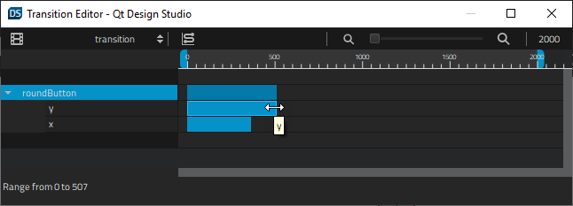
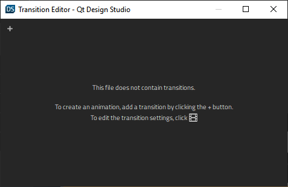
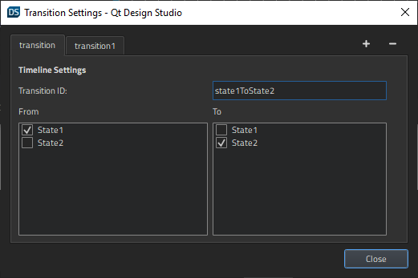

Transitions
To make movement between states smooth, you can use Transitions to animate the changes between states.
First, you need to add states in the States view and edit some properties that can be animated, such as colors or numbers, in the Properties view. For example, you can animate the changes in the position of a component.

In Transitions, you can set the start frame, end frame, and duration for the transition of each property. You can also set an easing curve for each animation and the maximum duration of the whole transition.
Zooming in Transitions
Use the slider on the toolbar to set the zooming level in Transitions. Select the  and
and  buttons to zoom out of or into the view.
buttons to zoom out of or into the view.
Summary of Transitions Toolbar Actions
| Button/Field | Action | Read More |
|---|---|---|
 | Opens Transition Settings dialog for editing transition settings. | Specifying Transition Settings |
| Transition ID | Displays a list of transitions that you can open in Transitions. | Animating Transitions Between States |
 | Opens Easing Curve Editor for attaching an easing curve to the selected transition. | Editing Easing Curves |
 | Zoom Out (Ctrl+-): zooms out of the view. | Zooming in Transitions |
| Slider | Sets the zooming level. | Zooming in Transitions |
| Zoom In (Ctrl++): zooms into the view. | Zooming in Transitions | |
| Maximum Duration | Specifies the maximum duration of the transition. |
Animating Transitions Between States
To animate transitions:
- Select View > Views > Transition Editor.

- Select the
 (Add Transition) button to add a transition. This works only if you have added at least one state and modified at least one property in it.
(Add Transition) button to add a transition. This works only if you have added at least one state and modified at least one property in it. - Move the blue bar next to the component or property name to set the start and end frame of the animation of the property. Pull its left and right edges to set the duration of the animation.
- To attach an easing curve to the selected transition, select the (Easing Curve Editor (C)) button.
Specifying Transition Settings
To modify transition settings, select the (Transition Settings (S)) button in Transition Editor.

To add transitions:
- Select the (Add Transition) button.
- In the Transition ID field, enter an ID for the transition.
- In the From field, select the state to transition from.
- In the To field, select the state to transition to.
To remove the current transition, select the  (Remove Transition) button.
(Remove Transition) button.